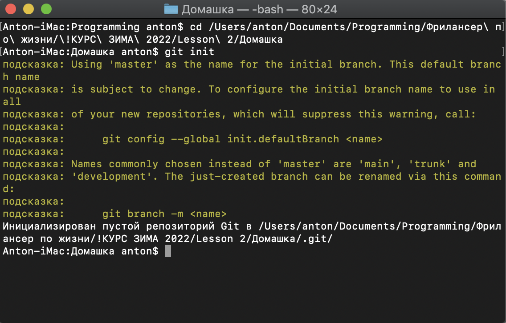
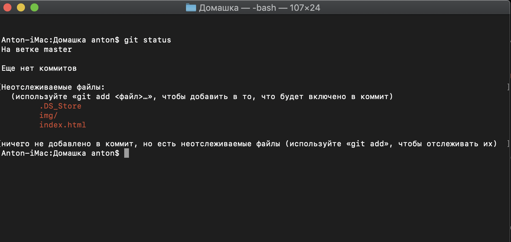
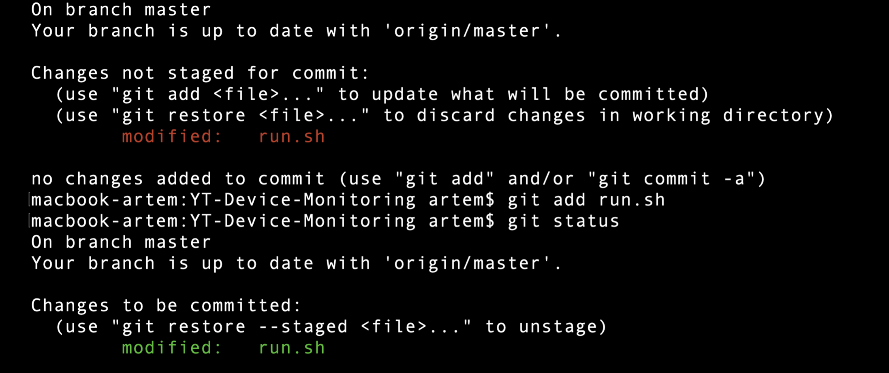
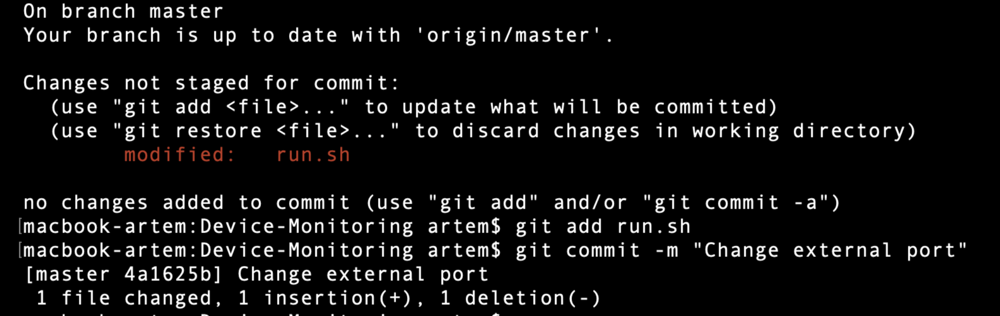

Что такое GIT?
Git — распределённая система контроля версий, которая даёт возможность разработчикам отслеживать изменения в файлах и работать над одним проектом совместно с коллегами. Она была разработана в 2005 году Линусом Торвальдсом, создателем Linux, чтобы другие разработчики могли вносить свой вклад в ядро Linux.

Что такое VCS?
Version Control System (VCS) - это система контроля версий. С помощью нее мы можем фиксировать изменения и при необходимости вернуться к определенной версии. Git - это распределённая VSC. Каждый раз, когда мы сохраняем состояние проекта, Git запоминает как выглядит каждый файл в этот момент времени, как бы делая снимок всего проекта (замораживая его) и сохраняет ссылку на этот снимок, его еще можно назвать коммитом.
Первоначальная настройка GITа
Первоначальная настройка проста. Для старта нужно указать всего два параметра - имя пользователя и его email. Эта информация будет отображаться в коммите. Эти параметры могут храниться в трех местах:
- /etc/gitconfig - общие для всех пользователей системы настройки. git config —system
- ~/.gitconfig - настройки для конкретного пользователя. git config —global
- Файл config в каталоге .git внутри репозитория - настройки для текущего репозитория. git config —local
Например:
$ git config --global user.name "Anton Morozov"
$ git config --global user.email anton.morozov@gmail.com
ВАЖНО!
Если у Вас уже есть проект, над которым Вы работали и Вы решили подключить систему контроля версий Git, то достаточно внутри каталога с проектом выполнить команду git init
Команда git status
Показывает состояние рабочего каталога
Команда git add
Добавляет содержимое файла в index
Команда git commit
Записывает изменения в репозиторий
Файл run.sh был изменен. После добавления его в индекс (git add) и выполнения команды git commit файл переходит в состояние commited, то есть git сохранит изменения в историю.
Полезные параметры:
-
[-m] - позволяет сразу передать commit message. Если не указывать, то откроется текстовый редактор.
-
[-a] - git автоматически перед коммитом добавит в индекс все файлы, которые находятся под версионным контролем и были изменены. При этом файлы, которые не под версионным контролем затронуты не будут.